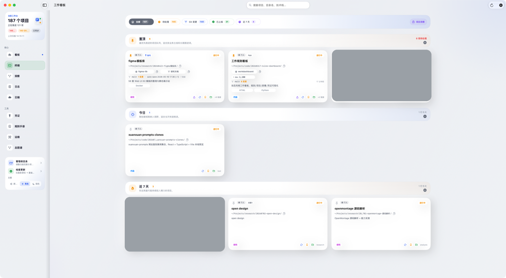
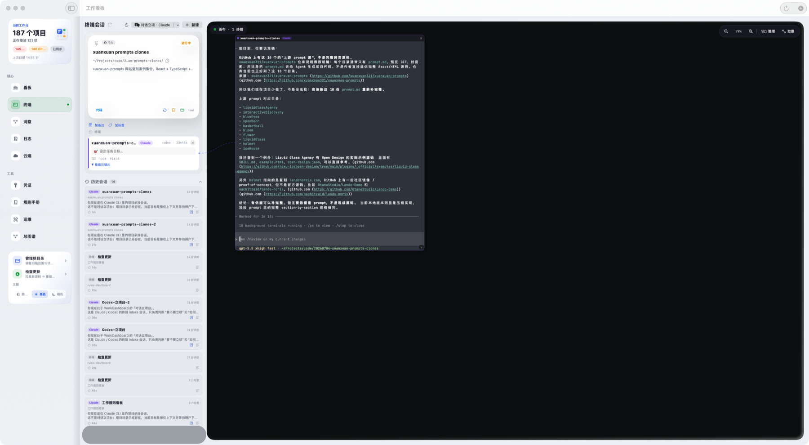
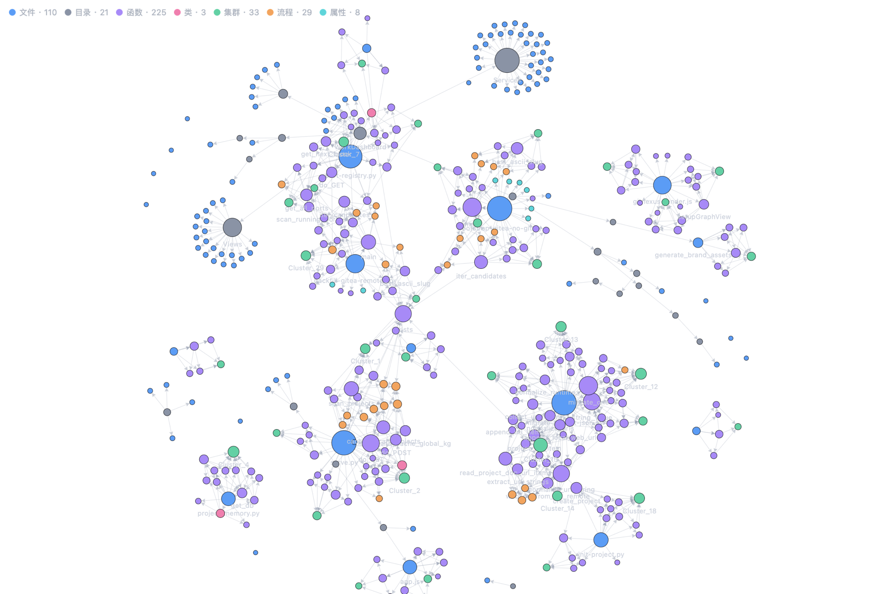
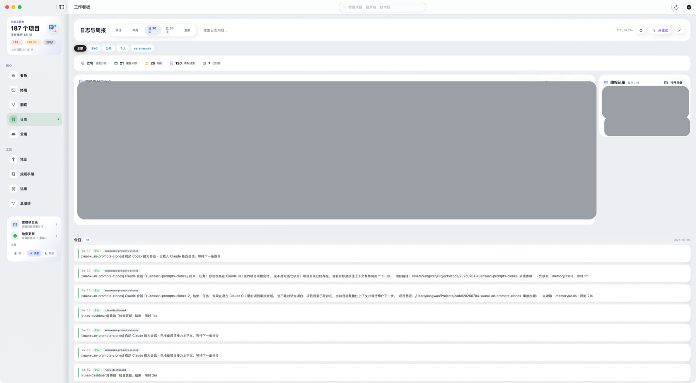
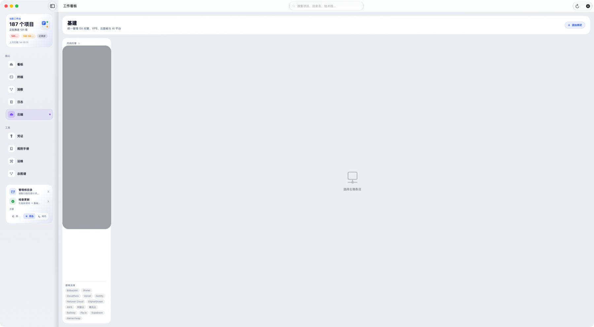
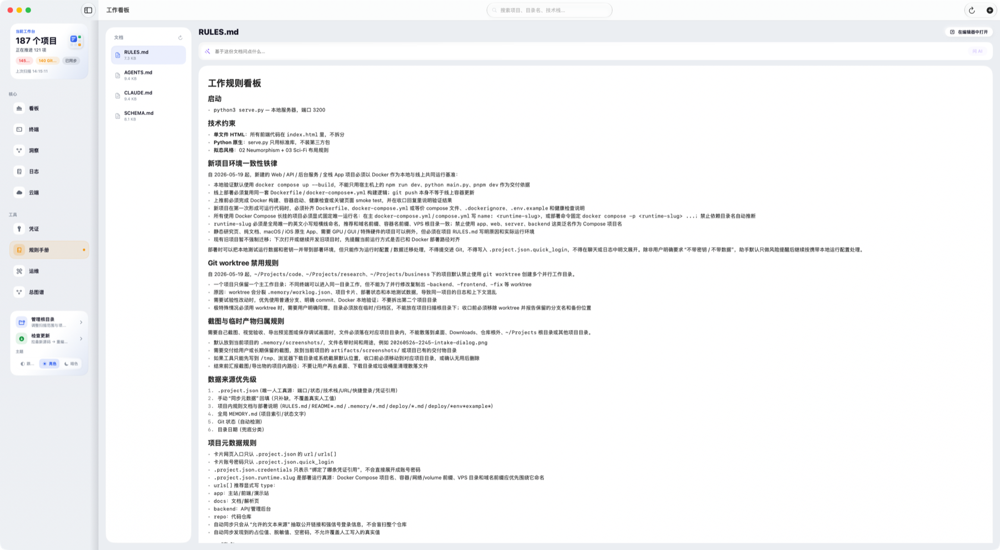
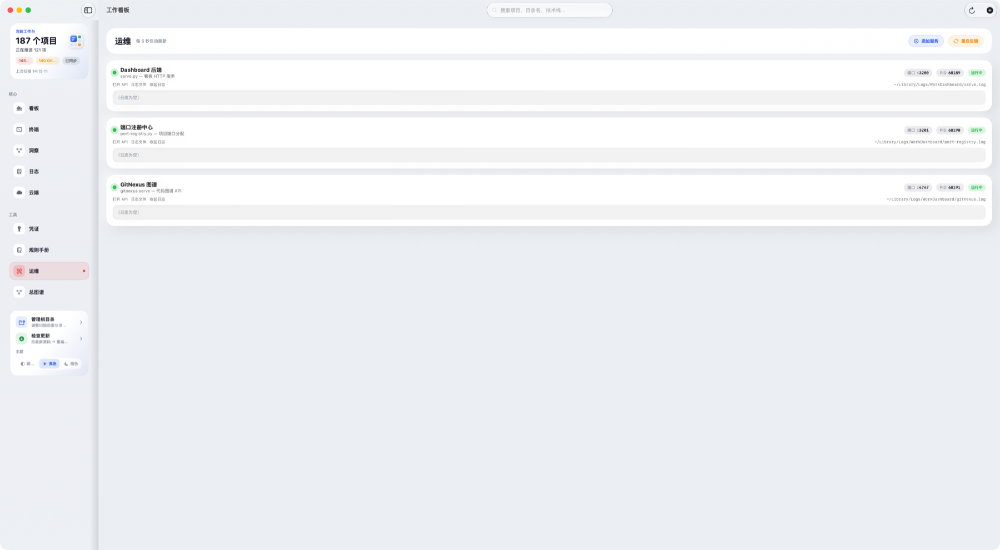
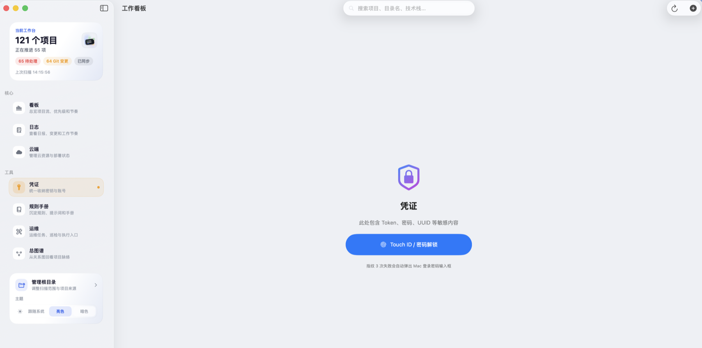

对话立项Intake
短视频 · repo · 灵感先分诊，再决定立项。
工作看板
WorkDashboard · macOS
SwiftUI · macOS 14+ · 本地文件系统即第一数据源
一张真的能开工的 macOS 项目看板。
扫你本地项目根目录下的全部分类（含自定义项目库），读每个项目的 .project.json 和 .memory/worklog.json，识别嵌套子项目、自动发现「合同外」野项目并一键收编。Git 状态、日志回顾、代码关系图、云端资源和 AI 会话工作台，都在同一张桌面看板里。
云端绑定Cloud
Coolify · VPS · Git 平台统一回到项目。
助手接力Assistant
多模型直接接进卡片，不用切 IDE。
快速凭证Keys
全局日志Logbook
规则沉淀Rules
运维面板Ops
项目洞察Insights
界面预览
这些是 v1.7.1 真实运行中的截图，不是示意图。
灰色色块为发布时打码的私有信息（服务器地址、公司项目名等）。








.project.json · worklog.json · Git），项目内容不上云
日常怎么用
不是一堆功能堆在一起，是一条从扫描到收工的连续动线。
挂上目录
选根目录，ProjectScanner 并行扫所有项目，全程本地不请求网络。
分档 + 信号
五档时间线 + Git 脏改、元数据、worklog 缺失等待处理提示。
立项 / 接力
LLM 先判值不值得建；开工时自动写 handoff 文件给 Claude / Codex。
云端对齐
GitHub · Coolify · SSH 绑回，凭证从 credentials.md 实时读。